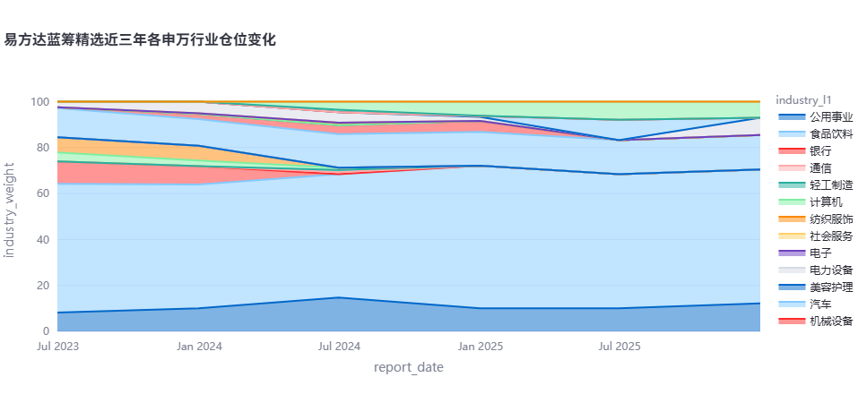
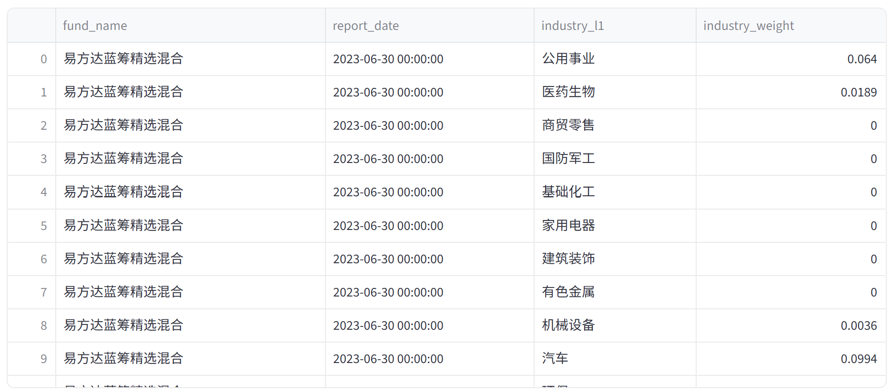
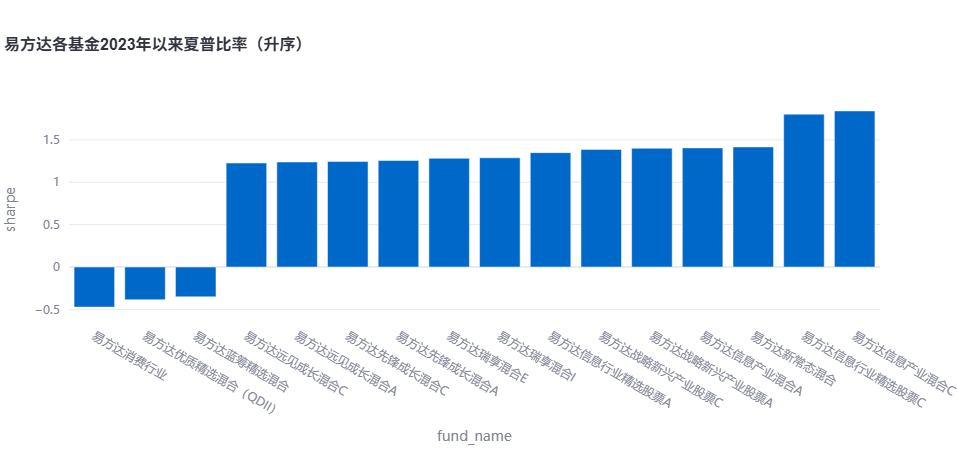
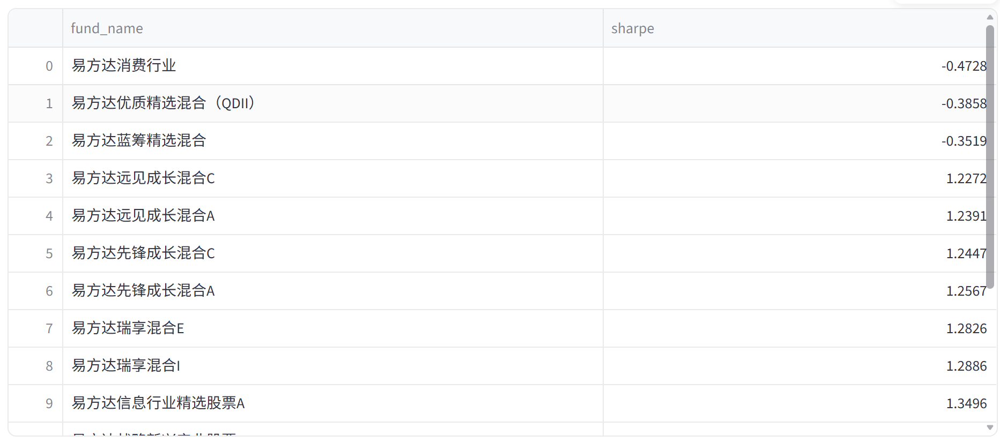
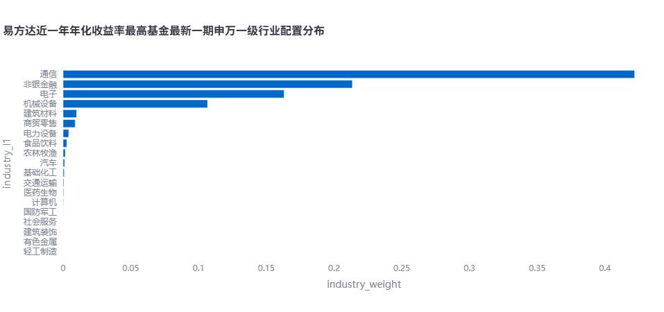
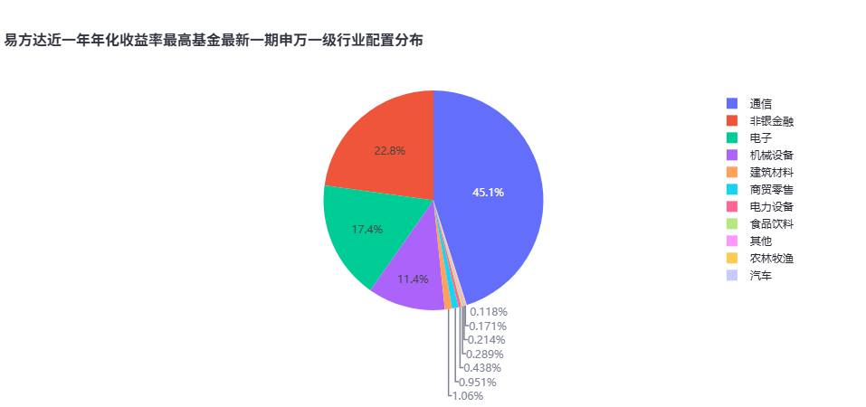
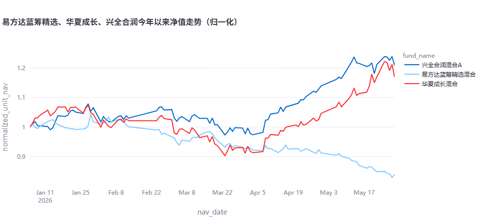
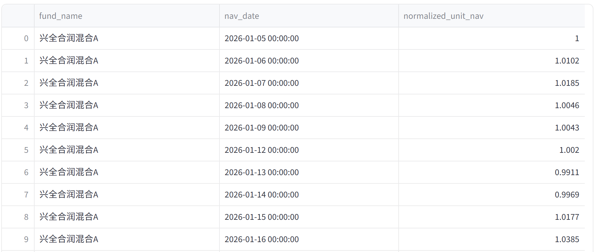
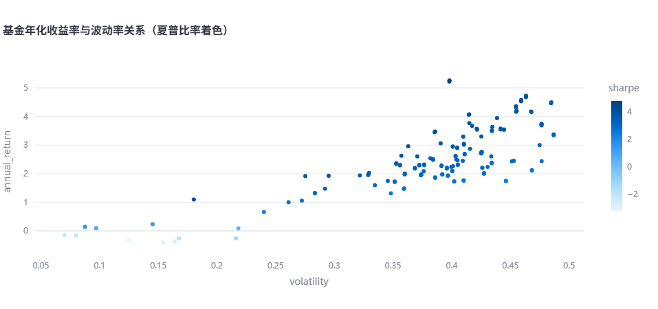
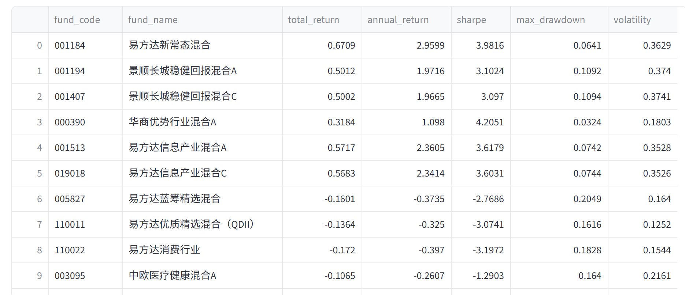

Investment Research Agent · Local NL2SQL BI for Chinese Mutual Funds
基金研究智能体项目说明
一个面向中国公募基金研究场景的本地 NL2SQL 投研 Agent：用户用中文提问，系统自动生成 SQL、查询基金数据库，并返回数据表、图表和基于真实结果的中文解读。
01 · Overview
项目概览：这个系统解决什么问题
本项目的目标是把基金研究中的常见取数、计算、展示流程压缩成一次中文问答。系统返回的不只是自然语言答案，还包括可执行 SQL、查询结果表和自动选型图表，因此结果可以复查、可以解释，也便于继续分析。
当前系统定位不是投顾，也不做收益预测，而是一个“可信取数 + 自动分析展示”的研究辅助工具。它解决的是基金研究中常见的几个问题：数据分散、SQL 门槛高、临时问题多、指标口径容易不一致、结果难以复查。
| 数据范围 | 当前状态 |
|---|---|
| 净值日期 | 2001-12-18 至 2026-05-29 |
| 持仓报告期 | 2022-03-31 至 2025-12-31 |
| 申万一级/二级行业覆盖 | 2,898 / 3,040 只证券 |
展示案例：行业仓位变化
易方达蓝筹精选近三年各申万行业仓位的变化
查看本次生成 SQL
SELECT d.fund_name, i.report_date, i.industry_l1, i.industry_weight
FROM dim_fund AS d
JOIN v_fund_industry_alloc AS i ON d.fund_code = i.fund_code
WHERE d.fund_name LIKE '%易方达蓝筹精选%'
AND i.report_date >= '2023-06-01'
ORDER BY i.report_date, i.industry_l1
LIMIT 10000;

02 · Data Pipeline
数据与 ETL：数据怎么来、怎么入库、怎么保证可用
系统的数据底座是 PostgreSQL。ETL 目前以 Python 脚本形式实现，重点是先把端到端链路跑通，并保证每一步的数据口径可解释、可复查。
akshare：基金基础信息、净值、持仓、基金经理等公开数据- 申万行业成分数据：用于给持仓证券补充申万一级、二级行业分类
FAIL = 0：没有阻断级完整性问题WARN = 2：存在少量可疑历史数据INFO = 2：主要是覆盖率统计
ETL 流程
etl/build_universe.pyetl/load_funds.pyload_holdings.py / load_managers.pyload_sw_industry.py / compute_fund_perf.py核心数据表
| 表 | 作用 |
|---|---|
dim_fund | 基金主数据，一只基金一行 |
dim_manager | 基金经理主数据 |
bridge_fund_manager | 基金与基金经理的任职关系 |
fact_nav | 基金净值时序，包含单位净值、累计净值、日收益 |
fact_holding | 基金持仓明细 |
dim_security | 证券主数据，包含申万一级、二级行业 |
fact_fund_perf | 预计算业绩指标 |
当前 WARN/INFO 主要包括：1 条单日收益绝对值超过 20% 的异常点、部分历史记录存在累计净值小于单位净值的情况、40 只基金暂无持仓数据、142 只持仓证券没有申万行业。这些问题目前没有阻断系统演示，但在后续扩大基金池和产品化前需要进一步处理。
03 · Semantic Layer
语义层与指标口径：为什么不是让 LLM 直接写 SQL
这个项目的核心设计不是让 LLM 自由发挥写复杂 SQL，而是把高风险、易错的业务逻辑固化到数据库语义层中。LLM 只负责把用户问题路由到合适的表、视图或函数。
| 视图 / 函数 | 解决的问题 |
|---|---|
v_fund_perf_latest | 每只基金每个固定区间的最新业绩指标 |
v_fund_holding_latest | 每只基金最新一期全持仓个股明细 |
v_fund_top_holdings | 每期持仓按权重排名，支持“前 N 大重仓股” |
v_fund_industry_alloc | 申万一级行业配置 |
v_fund_industry_l2_alloc | 申万二级行业配置 |
f_fund_perf_range() | 任意自定义区间的业绩指标计算 |
例如，“前十大重仓股”不让模型临时写窗口函数，而是通过 v_fund_top_holdings.holding_rank <= 10 表达；“最新行业配置”不让模型自己判断最新报告期，而是通过 is_latest 字段表达。
acc_nav；年化按 252 个交易日折算；波动率为日收益标准差乘以 √252；夏普比率默认无风险利率为 0；最大回撤基于累计净值峰谷跌幅。
展示案例：自定义区间夏普比率排名
易方达的各基金，2023以来的夏普比率分别是多少，采用按照夏普比率升序的竖柱状图
查看本次生成 SQL
SELECT d.fund_name, m.sharpe
FROM dim_fund AS d
CROSS JOIN LATERAL F_FUND_PERF_RANGE(d.fund_code, '2023-01-01', CURRENT_DATE) AS m
WHERE d.fund_name LIKE '%易方达%'
ORDER BY m.sharpe ASC
LIMIT 10000;

这个设计修复过一个真实问题：早期如果让模型从净值表现场推导“成立以来累计收益”，曾出现过结果形态合理但口径错误的情况。现在固定区间由 fact_fund_perf 统一预计算，自定义区间由 f_fund_perf_range() 统一计算，避免模型临时拼公式。
04 · NL2SQL
NL2SQL 与 SQL 准确性：中文问题如何变成可信查询
Agent 的核心入口是 agent/pipeline.py 中的 ask()。实现上不是把问题直接丢给模型，而是先从数据库实时构造 schema 语义上下文，再让模型在明确规则内生成候选 SQL，随后由系统做校验、执行、类型转换和结果解读。
实际实现链路
| 步骤 | 代码落点 | 具体做法 |
|---|---|---|
| 限定暴露给模型的对象 | CONTEXT_TABLES |
只把当前 Agent 需要的维表、事实表和语义视图放入上下文，例如 dim_fund、fact_nav、v_fund_perf_latest、v_fund_industry_alloc。 |
| 动态读取 schema 语义 | schema_context() |
运行时查询 information_schema.columns、col_description() 和 obj_description()，把表注释、列注释和数据类型拼成 prompt 中的 schema block。 |
| 生成 SQL | generate_sql() |
调用统一的 LLMClient.complete()，默认走 DeepSeek，也可通过 LLM_PROVIDER 切到 Claude；模型输出后会去掉可能出现的 markdown 代码围栏。 |
| 校验 SQL | guard() |
用 sqlglot 解析 AST，只允许单条 SELECT、白名单表/视图和语义层表函数；缺少 LIMIT 时自动补上行数上限。 |
| 执行和类型转换 | run_sql() |
用 psycopg 查询 PostgreSQL，并把 NUMERIC 返回的 Decimal 转成 float，把日期列转成 pandas datetime，保证后续图表和统计能正确识别类型。 |
| 生成文字解读 | narrate() |
只把查询结果样本交给模型，并要求“只能使用结果中实际出现的数字”；多序列结果会抽取每个分组的首尾行，避免只看 head/tail 漏掉中间基金。 |
prompt 中写入的业务护栏
SQL 系统提示词不是简单描述“请写 SQL”，而是把项目中已经踩过的口径和路由规则写进去，尽量让模型生成的数据查询符合业务语义。
- 基金名称默认使用
fund_name LIKE '%关键词%'，适配用户常用简称。 - 多个基金名称条件必须整体加括号，避免
AND/OR优先级导致日期过滤只作用于最后一个基金。 - 持仓、行业和重仓股分析只使用全持仓数据，避免把季报前十大误当成完整组合。
- 固定区间指标走
v_fund_perf_latest，例如 YTD、1Y、3Y、SI。 - 自定义区间指标走
f_fund_perf_range()，例如“2023 年以来”。 - SQL 只返回数据，不允许把颜色、图表类型、样式等展示意图写进查询结果。
| 问题 | 检查点 |
|---|---|
| 张坤管理了哪些基金 | 结果包含“蓝筹”“优质精选” |
| 易方达蓝筹精选成立以来的累计收益率是多少 | 结果包含约 0.60 |
| 白酒板块仓位最高的基金是哪只 | 结果包含“招商中证白酒” |
| 哪只基金重仓半导体行业最多 | 结果包含“申万菱信智能驱动” |
05 · Safety
SQL 安全与可控性：如何限制 LLM 的执行范围
LLM 在本系统中只负责生成候选 SQL，真正执行前会经过应用层的确定性校验。当前项目通过 agent/sql_guard.py 使用 sqlglot 解析 SQL AST，并在结构层面限制模型的执行范围。
- 只允许恰好一条 SQL 语句
- 只允许
SELECT - 禁止
SELECT INTO - 没有
LIMIT时自动补LIMIT 10000
- 只允许访问业务白名单表 / 视图前缀：
dim_、fact_、bridge_、v_ - 表函数只放行语义层函数，例如
f_fund_perf_range() - 拒绝访问系统 schema 或未知对象
- 前端 admin 角色可查看生成 SQL，便于人工复核
这套设计把“模型生成”和“系统执行”分开：模型只能提出 SQL，系统负责判断 SQL 是否属于允许的查询范围。这样既保留了自然语言查询的灵活性，也让数据库访问边界保持可控。
06 · Visualization & UI
可视化与前端交互：结果如何展示给用户
系统的可视化不是针对每个问题手写图表，而是把“数据查询”和“展示表达”拆成两层：SQL 只返回数据，图表层根据 DataFrame 的列类型、用户图表意图和可选的声明式 spec 来渲染 Plotly 图形。
确定式图表推断
build_chart() 是不依赖 LLM 的基础图表引擎。它先识别日期列、数值列和类别列，再根据数据形状选择图表；这个路径保证即使图表 spec 生成失败，系统仍能给出可用图表。
| 识别逻辑 | 图表类型 | 实现细节 |
|---|---|---|
| 日期列 + 数值列 | 折线图 | 按日期排序；如果存在类别列，则按类别分线。 |
| 日期列 + 类别列 + 仓位/占比类数值 | 堆叠面积图 | 通过列名 hint（如 weight、仓位、占比）或数值区间判断是否是构成数据。 |
| 类别列 + 单个数值列 | 柱状图 | 用于排名、对比和分解类结果。 |
| 两个及以上数值列、无日期轴 | 散点图 | 用于风险-收益、收益-波动等双指标截面关系。 |
| 用户明确要求饼图且数据是单期构成 | 饼图 | 长尾类别会合并为“其他”，避免扇区过多。 |
声明式图表 spec
在确定式推断之上，系统还有一层 author_chart_spec()。这里模型不生成 Python 绘图代码，只能输出受约束的 JSON：图表类型、x/y/color/size 映射、排序、横竖方向、是否堆叠、是否百分比归一化和可选颜色映射。
- 用户问题
- 实际结果列名和数据类型，例如
report_date:date、industry_weight:number - 结果前 3 行样例，帮助模型理解列含义和类别值
_validate_spec()检查图表类型是否合法、引用列是否真实存在。render_spec()是唯一渲染器，把 JSON 映射到 Plotly 调用。- spec 失败或渲染异常时，自动回退到
build_chart()。
web/app.py在启动时把st.secrets注入环境变量，复用 agent 层读取os.environ的方式。- 前端只调用
ask(question)，不直接参与 SQL 生成和业务计算。 - 登录由
streamlit-authenticator处理，并从 secrets 中读取账号与角色。 admin展示 SQL 和完整数据；viewer隐藏 SQL，只展示截断数据。
- 每次新查询后，前端把
last_df、last_sql、last_narrative、last_spec存入st.session_state。 is_chart_edit()通过“换成/改成/变为”等动词和图表/颜色关键词识别改图指令。- 改图时不调用
ask()，只修改chart_overrides，基于上一份 DataFrame 重绘。 - 如果原图来自 spec，就 patch
chart_type或颜色后走render_spec()；失败则回退build_chart()。
eval/charts.py 不调用 LLM，而是用固定 SQL 结果验证图表类型推断是否稳定；同时覆盖声明式 spec 的散点图、横向柱状图、百分比面积图、多 y 折线图和分类颜色映射。
展示案例：复杂查询后的图表就地修改
易方达近一年年化收益率最高的基金的最新一期的申万一级行业配置分布，用柱状图展示
把这张图换成饼图
查看本次生成 SQL
SELECT d.fund_code, d.fund_name, v.industry_l1, v.industry_weight
FROM dim_fund AS d
JOIN (
SELECT fund_code
FROM v_fund_perf_latest
WHERE period = '1Y'
AND fund_name LIKE '%易方达%'
ORDER BY annual_return DESC
LIMIT 1
) AS top ON d.fund_code = top.fund_code
JOIN v_fund_industry_alloc AS v ON d.fund_code = v.fund_code
WHERE v.is_latest = TRUE
ORDER BY v.industry_weight DESC
LIMIT 10000;

07 · Demo Questions
展示性问题设计
这一节展示两个完整交互案例。每个案例都按照实际页面的展示顺序组织：用户问题、生成 SQL、文字分析、图表和原始数据表。
展示案例：多基金归一化净值走势对比
对比易方达蓝筹精选、华夏成长和兴全合润今年以来的单位净值走势，用折线图展示
查看本次生成 SQL
SELECT d.fund_name,
fn.nav_date,
fn.unit_nav / NULLIF(first_val.first_unit_nav, 0) AS normalized_unit_nav
FROM dim_fund AS d
JOIN fact_nav AS fn ON d.fund_code = fn.fund_code
JOIN (
SELECT fund_code, unit_nav AS first_unit_nav
FROM (
SELECT fund_code,
unit_nav,
nav_date,
ROW_NUMBER() OVER (PARTITION BY fund_code ORDER BY nav_date) AS rn
FROM fact_nav
WHERE nav_date >= '2026-01-01'
) AS t
WHERE rn = 1
) AS first_val ON d.fund_code = first_val.fund_code
WHERE (d.fund_name LIKE '%易方达蓝筹精选%'
OR d.fund_name LIKE '%华夏成长%'
OR d.fund_name LIKE '%兴全合润%')
AND fn.nav_date >= '2026-01-01'
ORDER BY d.fund_name, fn.nav_date
LIMIT 10000;

展示案例：风险收益关系截面分析
所有基金今年以来的年化收益率、波动率和夏普比率分别是多少，用散点图展示收益率和波动率的关系，并用夏普比率着色
查看本次生成 SQL
SELECT d.fund_code,
d.fund_name,
p.total_return,
p.annual_return,
p.sharpe,
p.volatility,
p.max_drawdown
FROM dim_fund AS d
JOIN v_fund_perf_latest AS p ON d.fund_code = p.fund_code
WHERE p.period = 'YTD'
AND d.is_active = TRUE
LIMIT 10000;

Appendix
附录：项目文件结构
查看主要目录和文件
agent/
clients.py 统一 LLM 调用接口，封装 DeepSeek 与 Claude 差异，供 SQL、解读和图表 spec 复用
pipeline.py Agent 主编排：schema 读取、NL2SQL、SQL 执行、中文解读、图表推断与就地改图
sql_guard.py 基于 sqlglot 的 SQL AST 安全校验，限制单条 SELECT、白名单对象和默认 LIMIT
etl/
build_universe.py 从公开基金列表和核心样例基金合并生成基金池，控制当前系统覆盖范围
load_funds.py 拉取基金基础信息、成立日、类型和单位/累计净值，写入 dim_fund 与 fact_nav
load_holdings.py 拉取季报/中报/年报持仓，区分前十大与全持仓，写入 fact_holding 和 dim_security
load_managers.py 拉取当前基金经理与基金关系，写入 dim_manager 和 bridge_fund_manager
load_sw_industry.py 用申万行业成分数据补全证券一级/二级行业，支撑行业配置和持仓归因查询
compute_fund_perf.py 按统一口径预计算收益率、年化、夏普、回撤、波动率，写入 fact_fund_perf
data_quality.py 对净值、持仓、指标和行业覆盖做 FAIL/WARN/INFO 分级检查，输出数据质量摘要
eval/
cases.yaml 中文问题评测集，覆盖净值、经理、持仓、指标、自定义区间和申万行业问题
run_eval.py 批量执行 NL2SQL 评测，检查查询结果是否包含预期值，而不只判断是否非空
charts.py 不调用 LLM 的图表回归测试，验证数据形状到折线/面积/柱状/散点/饼图的映射
sql/
schema.sql PostgreSQL schema，包含核心维表/事实表、语义视图、指标函数和 pgvector 预留表
web/
app.py Streamlit 登录前端，负责提问输入、图表展示、SQL/数据权限控制和会话态改图
training_data/
qsql/ 高质量问题-SQL 样例库，为后续接入 Vanna/pgvector 检索增强提供种子语料